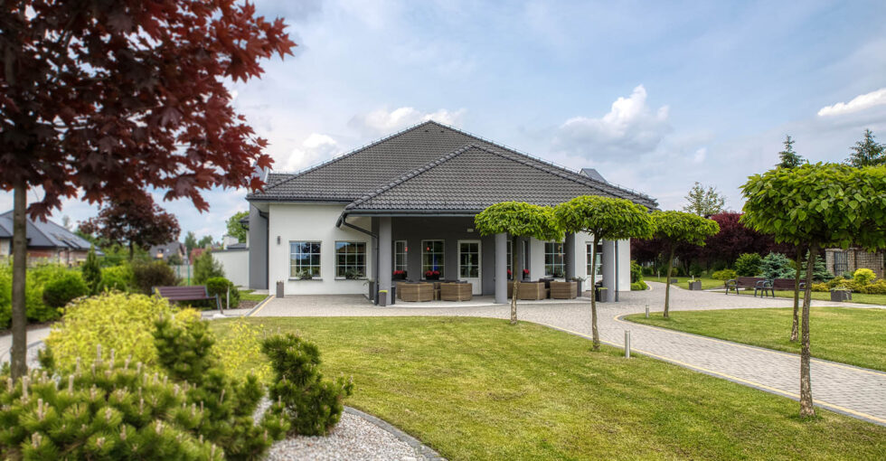
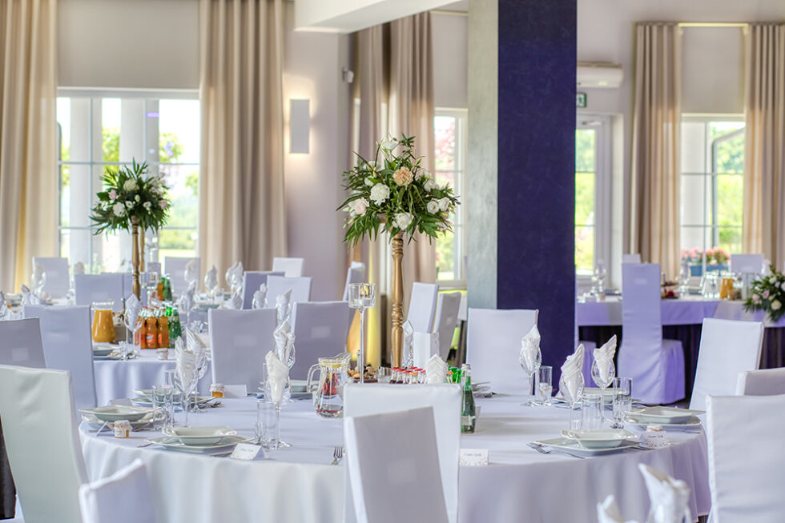

Wesela
Duża sala, opieka nad przebiegiem dnia, miejsce dla gości i ogród, który może stać się tłem ceremonii.

Radlin · od 2014 roku
Wesela, rodzinne przyjęcia i wydarzenia, które mają swój rytm — od pierwszej rozmowy po ostatni toast.
Porozmawiajmy o Waszym terminie ↗200osób na sali głównej
50osób w kameralnym gronie
ogródna ceremonię plenerową
1 zespółod planu do obsługi
Dom Przyjęć PREMIUM
Mamy przestrzeń na duże wesele i swobodę kameralnego przyjęcia. Do dyspozycji są dwie sale, ogród, pokoje dla gości oraz zespół, który zna plan wydarzenia od początku.
W opiniach goście najczęściej doceniają kuchnię, uważną obsługę, wygodę sal i atmosferę wokół całego miejsca. To właśnie te rzeczy porządkujemy przed każdą realizacją.
Umów spotkanie i obejrzyj salę →
Sala główna
do 200 gościOkazje
Wybierz punkt wyjścia — resztę ustalimy w rozmowie, bez gotowego scenariusza narzuconego każdej uroczystości.
Duża sala, opieka nad przebiegiem dnia, miejsce dla gości i ogród, który może stać się tłem ceremonii.
Chrzciny, komunie, rocznice i urodziny — w sali kameralnej lub głównej, stosownie do liczby bliskich.
Spotkania zespołów, jubileusze i wieczory firmowe z miejscem na program, kolację i dobrą rozmowę.

02Ceremonia w ogrodzie
Ogród daje ceremonii własną oprawę, a Wam — jedno miejsce na kolejne części dnia. Przed spotkaniem opowiedzcie nam, jak wyobrażacie sobie ten moment.
Sprawdź dostępność →Co jest dla nas ważne
Smak, tempo podania i komfort przy stole są częścią całego doświadczenia — nie dodatkiem po planie.
Jasny podział odpowiedzialności pozwala Wam być razem z gośćmi, zamiast szukać kolejnej odpowiedzi.
Klimatyzacja, wyposażenie i wydzielone strefy mają po prostu dawać wygodę przez cały wieczór.
Galeria
Najlepiej obejrzeć ją na miejscu. Zdjęcia są początkiem rozmowy, nie jej końcem.

W domu przyjęć jest miejsce na wspólny toast, rozmowy bez pośpiechu i wydarzenie dopasowane do Waszej liczby gości.
Napisz do nas ↗Pierwszy krok
Podajcie termin, liczbę gości i rodzaj uroczystości. Najszybciej odpowiemy telefonicznie lub e-mailem.